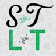

<mat-toolbar class="sticky" color="primary">
    <mat-toolbar-row>
        <div class="pointer title" routerLink="/dashboard">
            <span>Some of This, Little of That</span>
        </div>
        <span class="spacer"></span>
        <div class="pointer" routerLink="/savedrecipes">
            <mat-icon class="icon">favorite</mat-icon><span class="tabHide">Saved Recipes</span>
        </div>
        <div class="pointer" routerLink="/addrecipe">
            <mat-icon class="icon">add_box</mat-icon><span class="tabHide">Add Recipe</span>
        </div>
        <div class="pointer" (click)="openDialog()">
            <mat-icon class="icon">account_circle</mat-icon><span class="tabHide">Account</span>
        </div>
    </mat-toolbar-row>
</mat-toolbar>
<div class="contentPush"></div>